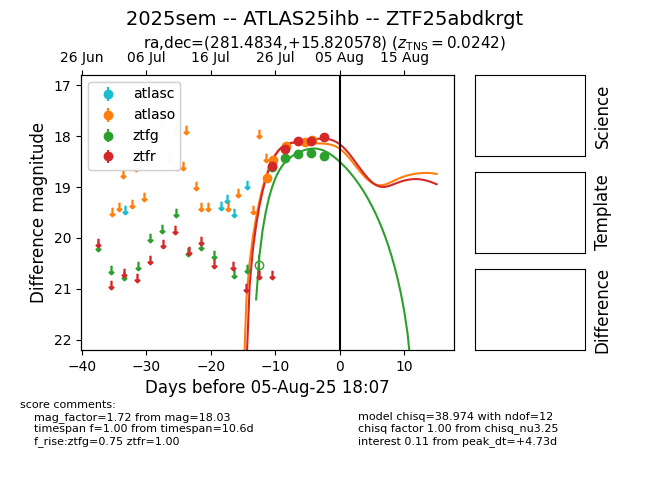

Target 2025sem at 2025-08-05 18:07, see:
FINK: fink-portal.org/2025sem
Lasair: lasair-ztf.lsst.ac.uk/objects/2025sem
ALeRCE: alerce.online/object/2025sem
TNS: wis-tns.org/object/2025sem
YSE: ziggy.ucolick.org/yse/transient_detail/2025sem
alt names
ZTF25abdkrgt (ztf,fink)
2025sem (tns,yse)
ATLAS25ihb (atlas)
coordinates:
equatorial (ra, dec) = (281.4834,+15.82058)
galactic (l, b) = (46.4984,+8.33007)
photometry
last atlaso=18.08, ztfg=18.39, ztfr=18.03
5 atlaso, 5 ztfg, 5 ztfr detections
